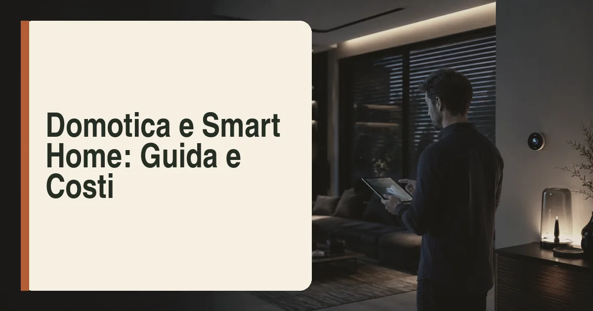

Cosa prevedere in fase di ristrutturazione
La domotica dà il meglio quando nasce insieme all'impianto elettrico, non dopo. In una ristrutturazione con impianto rifatto, le decisioni da prendere prima della chiusura delle tracce sono cinque. Primo, la filosofia del sistema: cablato (bus dedicato, massima affidabilità) o wireless (retrofit e flessibilità). Secondo, la predisposizione delle sonde: temperatura e umidità in ogni zona, sensori di apertura su finestre e porte blindata, eventuale rilevazione di presenza. Terzo, i punti di attuazione: tapparelle e tende motorizzate, elettrovalvole di zona per il riscaldamento, relè per luci e carichi rilevanti. Quarto, il quadro elettrico, che va dimensionato con spazio per attuatori, alimentatori e moduli di controllo dei carichi. Quinto, la rete dati: prese LAN nelle stanze principali e copertura Wi-Fi progettata, perché oggi gran parte della casa intelligente viaggia sulla rete IP.
Il consiglio che i progettisti impiantistici ripetono ai committenti è semplice: anche se il budget per la domotica completa non c'è, cablate comunque. Far passare un bus o qualche metro di tubo corrugato in più durante i lavori costa poche centinaia di euro; aggiungerlo a ristrutturazione finita significa riaprire le pareti. La predisposizione è l'investimento con il miglior rapporto costo-futilità futura di tutto il cantiere.
Sistemi a confronto: cablato KNX o wireless
Il riferimento dei sistemi cablati è KNX, lo standard internazionale aperto supportato da centinaia di produttori: attuatori, termostati, pulsanti e gateway di marche diverse dialogano sullo stesso bus, l'impianto non dipende da un singolo fornitore e la manutenzione a 20 anni è garantita dall'interoperabilità. È la scelta delle ville e delle ristrutturazioni complete, con costi proporzionati alla professionalità dell'integratore che lo programma.
Sul fronte wireless, il mercato consumer e professionale offre tre famiglie: Zigbee e Z-Wave (reti mesh a basso consumo, ampia scelta di sensori e attuatori), i protocolli dei grandi ecosistemi (Google, Amazon, Apple) e soprattutto Matter, lo standard di interoperabilità nato dall'alleanza dei colossi tecnologici, che sta risolvendo lo storico problema dei dispositivi "chiusi" in una sola app. Per appartamenti, seconde case e retrofit senza opere murarie, il wireless professionale o ibrido è oggi una scelta pienamente difendibile.
| Criterio | Cablato (KNX) | Wireless (Zigbee/Matter) |
|---|---|---|
| Affidabilità | Massima, nessuna batteria | Buona; batterie da sostituire |
| Interoperabilità | Totale tra marche | In miglioramento con Matter |
| Installazione | In cantiere, con tracce aperte | Anche a casa finita |
| Costo appartamento 100 mq | 10.000-20.000 € | 1.500-6.000 € |
| Espandibilità | Buona se predisposta | Immediata, plug and play |
| Valore percepito alla rivendita | Alto | Limitato |
Gli scenari che conviene davvero automatizzare
Non tutto ciò che si può automatizzare merita di esserlo. Gli scenari con ritorno concreto, misurato in comfort o risparmio, sono:
- Clima per zone: termostati e testine su collettori o fancoil gestiti per ambiente e per orario, integrati con la pompa di calore — è lo scenario che ripaga di più, specie abbinato al riscaldamento a pavimento.
- Gestione dei carichi: controllo della potenza impegnata che stacca temporaneamente i carichi non prioritari (boiler, ricarica auto, asciugatrice) quando si supera la soglia del contatore: addio distacchi, e spesso si evita l'aumento di potenza contrattuale.
- Tapparelle e schermature: motorizzazione con scenari legati a sole e temperatura, che d'estate tagliano il carico solare e riducono i consumi di raffrescamento.
- Luci con rilevazione presenza nei disimpegni, bagni ciechi e scale: comfort e piccoli risparmi senza pensieri.
- Sicurezza integrata: sensori di apertura, videosorveglianza, rilevazione fumi e fughe d'acqua con elettrovalvola di chiusura — quest'ultima è la protezione più sottovalutata e più utile di tutte.
Quanto costa: budget realistici per fascia
I numeri del 2026, per un appartamento di 90-110 mq, si dividono in tre fasce. La fascia smart di base (1.500-4.000 euro): termostato intelligente, qualche attuatore su luci e tapparelle, sensori principali, controllo da app — quasi tutto wireless, installabile anche a lavori finiti. La fascia intermedia (5.000-9.000 euro): clima multizona, gestione carichi, tapparelle motorizzate, sicurezza di base, supervisione centralizzata; qui conviene l'installazione durante la ristrutturazione. La fascia domotica integrata (10.000-20.000 euro e oltre): sistema cablato KNX con scenari personalizzati, integrazione con fotovoltaico, pompa di calore (come quelle della nostra classifica delle migliori pompe di calore) e ricarica dell'auto elettrica, pannelli di comando a parete e supervisione remota dell'integratore.
Nel preventivo vanno conteggiati anche i costi nascosti: la programmazione (che nei sistemi cablati vale il 20-30% del totale), gli aggiornamenti, l'eventuale abbonamento cloud di alcuni ecosistemi wireless e la formazione all'uso — una domotica che nessuno in casa sa usare è denaro sprecato. Ultimo criterio: diffidare dei sistemi chiusi senza vie di uscita; tra dieci anni la casa ci sarà ancora, il produttore forse no.
Detrazioni fiscali e aspetti pratici
Sul piano fiscale, la domotica non ha un bonus dedicato ma rientra nel perimetro del bonus ristrutturazione quando è parte di un intervento di manutenzione straordinaria sull'abitazione: i dispositivi che consentono la gestione automatizzata degli impianti (termoregolazione evoluta, controllo remoto degli impianti) sono espressamente citati dalla norma tra gli interventi ammessi all'Ecobonus quando integrati negli impianti termici, mentre gli altri componenti seguono la detrazione edilizia ordinaria con aliquote del 50% prima casa e 36% altre unità. Come sempre, bonifico parlante, fatture dettagliate e — per le componenti che incidono sull'efficienza energetica — comunicazione ENEA.
Chiudiamo con gli errori più frequenti raccolti dagli installatori: domotica decisa a lavori avanzati (tracce chiuse e quadro già montato), assenza di un piano scenari scritto concordato con chi abiterà la casa, dimenticare la rete dati, e affidare la programmazione a chi vende i componenti ma non farà assistenza. La casa intelligente funziona quando è invisibile: la tecnologia migliore è quella che gli abitanti smettono di notare dopo una settimana.
«La buona domotica non si vede e non si comanda: anticipa. Se dopo un mese state ancora aprendo l'app per accendere una luce, il problema non è la tecnologia, è il progetto.»
Quanto costa: tre livelli di impianto
La domotica non è un prodotto unico ma una famiglia di soluzioni con budget molto diversi. Il primo livello è la smart home a dispositivi: termostato intelligente, prese e attuatori wireless, videocitofono connesso, sensori di apertura e perdite — si installa senza opere murarie, vive sul Wi-Fi domestico e costa 500-2.500 euro per un appartamento. È la scelta per chi non ristruttura e vuole comunque controllo da remoto e qualche automazione, con il limite della frammentazione tra app e standard diversi.
Il secondo livello è l'impianto evoluto integrato nella ristrutturazione: predisposizioni in fase di cantiere (tubazioni e dorsali nei massetti e nelle controsoffittature), attuatori a parete al posto dei deviatori, scenari luci-tende-clima gestiti da un unico sistema, videocitofonia e sicurezza integrate. Costo indicativo 5.000-15.000 euro per un appartamento di 100 mq, con la voce decisiva che è la predisposizione in cantiere: cablare quando i muri sono aperti costa una frazione di quanto costa dopo. Il terzo livello è il sistema a standard KNX o equivalenti, con supervisione completa, logica distribuita e integrazione profonda con impianti — clima, rinnovabili, ricarica auto: 15.000-40.000 euro, la scelta delle ville e degli uffici, dove la stabilità del bus cablato e l'indipendenza dal cloud giustificano l'investimento.
| Livello | Budget indicativo | Cosa comprende | Per chi |
|---|---|---|---|
| Smart a dispositivi | 500-2.500 € | Termostato, prese, sensori, app | Chi non ristruttura |
| Integrato in ristrutturazione | 5.000-15.000 € | Scenari luci-tende-clima, sicurezza, un sistema | Chi ristruttura comunque |
| KNX / supervisione completa | 15.000-40.000 € | Bus cablato, logica distribuita, energia integrata | Ville, uffici, nuove costruzioni |
Domotica e risparmio energetico: cosa funziona davvero
Tra marketing e realtà, le automazioni che restituiscono misurabilmente i soldi spesi sono quattro. La prima è la termoregolazione evoluta: cronoprogrammi adattivi, geolocalizzazione e, soprattutto, valvole termostatiche connesse stanza per stanza — riscaldare solo gli ambienti usati vale il 10-20% dei consumi di riscaldamento in una casa vissuta in modo non uniforme. La seconda è la gestione dei carichi elettrici: lavatrice, lavastoviglie, ricarica dell'auto e boiler attivati nelle ore di produzione fotovoltaica o nelle fasce economiche — con un impianto solare, spostare i carichi vale più di molte ottimizzazioni hardware. La terza è il controllo combinato clima-oscuranti: tapparelle e tende che scendono automaticamente nelle ore di irraggiamento estivo riducono il carico del raffrescamento in modo tangibile.
La quarta automazione che paga è il monitoraggio dei consumi: pinze amperometriche e dashboard che mostrano in tempo reale dove va l'energia — l'effetto comportamentale sulle famiglie è documentato e costa poche centinaia di euro. Il valore cresce quando il sistema dialoga con fotovoltaico e accumulo: la logica che decide quando caricare la batteria, quando attivare i carichi e quando riscaldare l'acqua sanitaria è il vero cervello dell'efficienza domestica — per il quadro, la nostra guida alle batterie di accumulo e il confronto caldaia a condensazione o pompa di calore. Le automazioni che invece pagano poco — luci colorate, scenari scenografici — sono comfort, non efficienza: legittime, ma non le si giustifichi in bolletta.
Domande frequenti
Quanto costa la domotica in una ristrutturazione?
Da 1.500-4.000 euro (smart di base) a 5.000-9.000 euro (intermedio) fino a 10.000-20.000 euro per la domotica cablata integrata KNX.
Meglio domotica cablata o wireless?
In ristrutturazione completa meglio il cablato KNX (affidabilità e valore); per retrofit e budget limitati il wireless professionale (Zigbee, Z-Wave, Matter) è una scelta solida.
La domotica fa risparmiare sui consumi?
Sì, con gli scenari giusti: clima per zone, gestione carichi e schermature possono tagliare i consumi reali del 15-20%.
La domotica è detraibile fiscalmente?
Non c'è un bonus dedicato: rientra nel bonus ristrutturazione (50%/36%) se parte della ristrutturazione, e nell'Ecobonus per la termoregolazione evoluta degli impianti termici.
Meglio un impianto cablato o basta il wireless?
Il wireless basta per retrofit e livello base; se si ristruttura, la predisposizione cablata costa poco in cantiere e dura di più. La soluzione migliore è spesso ibrida: dorsali cablate, sensori wireless.
La domotica aumenta il valore della casa?
Indirettamente: è percepita come dotazione di pregio, ma il valore principale viene dall'efficienza che produce — classe APE e bollette — più che dalla tecnologia in sé.
Fonti: Standard KNX e Matter/CSA; guide di associazioni di settore sull'integrazione impiantistica; Agenzia delle Entrate ed ENEA per il perimetro delle detrazioni; listini e preventivi di installatori e integratori 2026. Contenuto a scopo informativo: la progettazione degli impianti va affidata a professionisti abilitati.